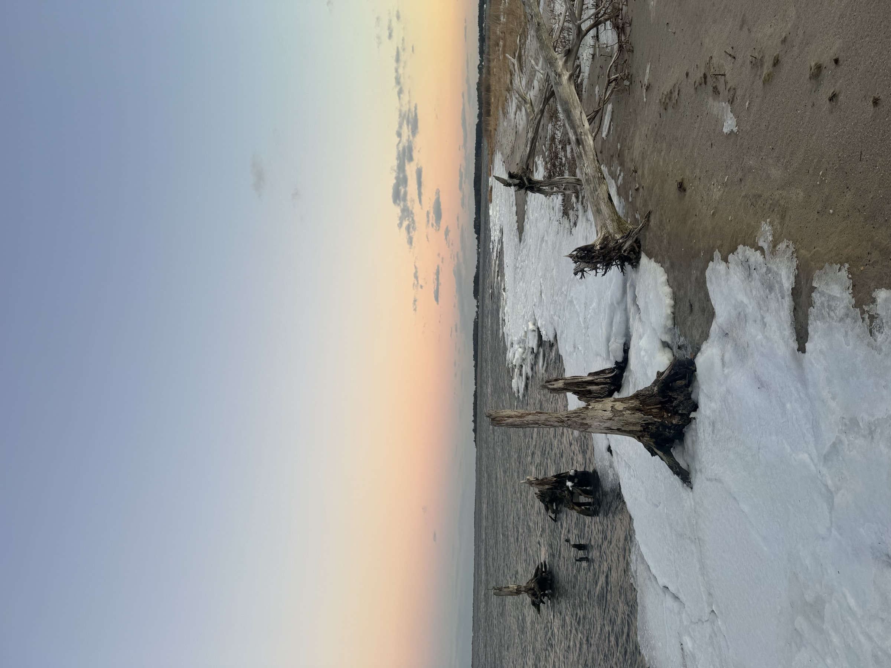

Drive the low country along Delaware Bay and you will pass stands of bare trees standing in open marsh — trunks with no bark, no leaves, no canopy, holding their position in grass and water where a forest used to be.
They are called ghost forests, and the obvious reading of them is wrong.
The obvious reading is death: sea level rose, the trees drowned, something was lost. All of that is true. But the more useful way to read a ghost forest is as a photograph of movement. Those trees mark the line where the marsh is climbing inland — and the marsh climbing inland is not the disaster. It is the escape.
How salt kills a tree slowly
The mechanism is not dramatic. It is chemistry, repeated.
When salt water floods a coastal forest, it changes the soil. DNREC describes flooding that introduces different components to the soil, increasing the availability of iron because of the extra moisture, and of sulfur. Trees that take a salt-water flooding become less resilient to the next one. The margins narrow with each event.
Then, as the agency puts it plainly, the sensitive trees die off first, and only certain trees remain.
So a ghost forest is not the record of one storm. It is the record of a hundred ordinary high tides, each slightly higher than the tides of a generation ago, arriving in a place where the ground is flat enough that a few inches of water travels a long way inland.
What the marsh is doing
Here is the part that reframes the picture.
A tidal marsh sits in a narrow band of elevation. Too deep and it drowns; too high and it becomes something else. As the water rises, a marsh has exactly one option: move up the slope. Landward. Into whatever is next.
What is next, along much of Delaware Bay, is forest.
DNREC has been direct about the stakes. Over the last couple of decades, the agency reports, it has seen dramatic losses of tidal marsh acreage and documented the death of trees bordering those tidal marshes. And the conclusion it draws is the one worth sitting with: the last hope for a lot of marsh might be migration upslope into forests.
The dead trees are the leading edge of that migration. Peer-reviewed work using lidar and imagery over Delaware Bay has found rapid coastal forest loss consistent with exactly this process — not random dieback, but marsh advancing.
Which means the standing dead are not the failure. They are the marsh finding somewhere to go.
Unless it cannot
The obvious question is what happens where the marsh has nowhere to climb.
This is the reason ghost forests are worth understanding rather than simply photographing. A marsh backed by rising woodland can retreat into it, losing trees and gaining grass, and the marsh — the nursery, the storm buffer, the filter — continues to exist somewhere. A marsh backed by a bulkhead, a road embankment, a raised development pad or a hard shoreline cannot. It gets squeezed against the barrier by rising water on one side and an immovable edge on the other.
The technical term is coastal squeeze. In plain language: the marsh drowns in place, and does not reappear inland, because there is no inland available to it.
Delaware's own wetlands planning has been built around this logic — the recognition that protecting a marsh means protecting the ground behind the marsh, because that ground is where the marsh will need to be. It is a strange kind of conservation. You are not defending the wetland where it is. You are reserving the space it is heading toward.
How to look at them
Once you know what you are seeing, the bare trunks stop reading as scenery.
Look for the line. A ghost forest almost always has a gradient: open marsh, then standing dead trunks, then stressed and thinning trees, then intact forest. That gradient is a timeline laid out sideways. The open marsh is where the transition finished. The stressed trees are where it is happening now. The healthy forest behind them is where it is going next.
Look for what is living in it. Standing dead trunks are useful structure — nest and perch sites for ospreys, eagles and herons that hunt the marsh underneath. A ghost forest is not sterile. It is a habitat in the middle of becoming a different habitat.
And look at the ground. Where the transition is well advanced there will be marsh grass growing between the trunks, which is the whole story in one frame: the new system already established under the skeleton of the old one.
The trees are dead. That is real, and it is not reversible on any timescale that matters to a person. But standing in a ghost forest is not standing at an ending. It is standing at a boundary that is moving, slowly, in a direction you can see.
Sources: Delaware DNREC, Wetland Monitoring and Assessment Program, on saltwater intrusion, soil chemistry and marsh migration upslope into forests; peer-reviewed lidar and imagery analysis of coastal forest loss around Delaware Bay consistent with marsh migration; general scientific literature on ghost forest formation along the US Atlantic coast. DNREC's published material describes dramatic losses of tidal marsh acreage over recent decades without giving a single statewide acreage figure, and no such figure is invented here. Descriptions of coastal squeeze reflect the general scientific understanding of marsh response to hardened shorelines rather than a Delaware-specific measurement.